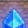
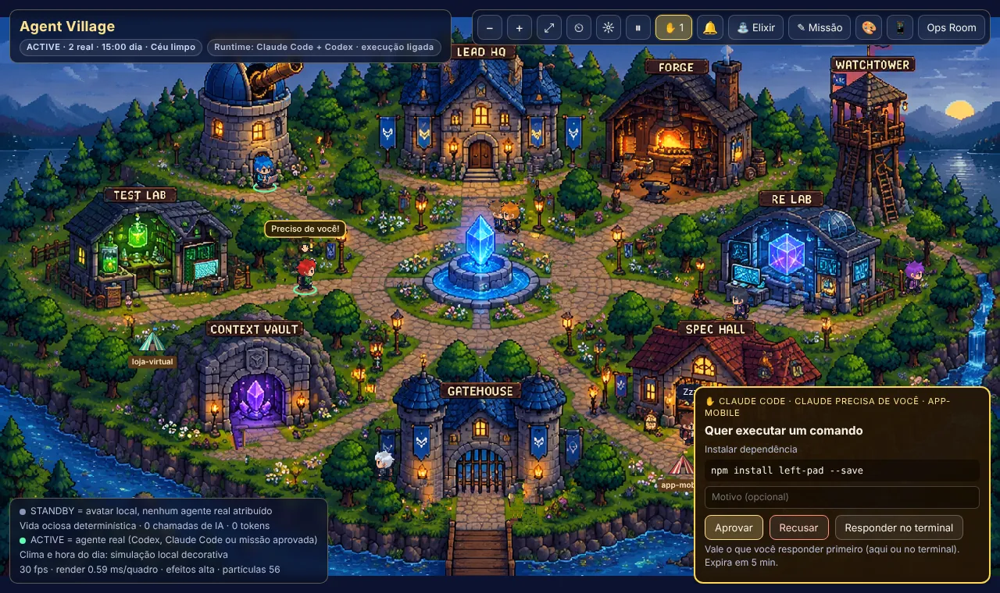
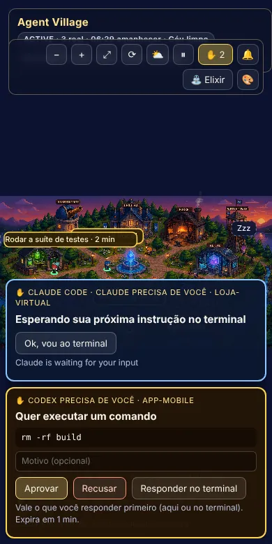

✋ Claude Code precisa de você · app-mobile
Quer executar um comando
Instalar dependência
npm install left-pad --save
Toque num botão para ver o que a vila devolve ao Claude Code.

Agent VillageCada agente do Claude Code e do Codex vira um morador. Você vê quem está explorando, editando ou testando, e quando um deles precisa de permissão, ele corre até o portão e levanta a mão. Você aprova ali mesmo, até pelo celular.

Pedidos de permissão do Claude Code e do Codex chegam à vila. O avatar daquela sessão vai até o Gatehouse e espera. Vale o que você responder primeiro: no cartão, no celular ou no terminal.
✋ Claude Code precisa de você · app-mobile
Instalar dependência
npm install left-pad --save
Toque num botão para ver o que a vila devolve ao Claude Code.
Resposta do hook:
(esperando sua decisão)
npm run village:setup -- hooks install --yes instala o hook de permissão em cada conta do Claude Code e do Codex, com backup antes.
O cartão diz o que ele quer: o comando, o arquivo ou a página. Ligue o 🔔 para ouvir um aviso.
Aprovar, recusar com um motivo ou deixar para o terminal. Nada é aprovado sozinho.
Sem página aberta, o pedido segue direto para o terminal, como sempre.
Um avatar só fica ACTIVE (anel verde) quando um agente real ocupa aquele papel. O resto do tempo os moradores passeiam, conversam e jogam, tudo calculado no seu computador, sem IA.
Janela de 5 horas e semanal do Claude Pro/Max e do ChatGPT Plus, com a próxima renovação. Clicar só relê os dados: nunca inventa crédito.
Escreva o pedido, veja qual agente será usado e por quê, aprove, e acompanhe os avatares trabalhando. No fim, um Release Gate diz se ficou pronto.
Cada pasta ~/.claude* e ~/.codex* vira uma conta. A missão vai para a conta com mais cota livre.
Na mesma rede Wi-Fi, digite um código de 8 caracteres e acompanhe a vila pelo celular, aprovando ou recusando pedidos.
Cada projeto com sessão aberta ganha uma barraca. A luz acende enquanto há agentes trabalhando e ela é desmontada quando você fecha tudo.
Enquanto um teste ou build roda, o avatar come pipoca, cruza os braços, junta teias e cochila. Confete se passou, nuvem de chuva se falhou.
Pedra-papel-tesoura valendo moedas, futebol na praça, pescaria na ponte. Um trabalho real interrompe qualquer jogo na hora.
Cores de cabelo e roupa, tom de pele, o visual de outro papel ou uma arte sua, seguindo a política de arte do projeto.
Ciclo de dia e noite pela sua hora local, lampiões que acendem, água, cachoeira, chuva e neblina. Roda a 30 fps até em notebook de 2013.

US$ 0,00
Gasto de API autorizado por padrão. A vila usa só o login do seu plano.
ANTHROPIC_API_KEY e OPENAI_API_KEY são removidas dos processos dos agentes.Gratuito e local: tudo roda no seu computador. Precisa do Node.js 20 ou mais novo e do Claude Code e/ou do Codex já logados.
No Prompt de Comando ou no PowerShell:
git clone https://github.com/Marcusvrg23/agent-village.git cd agent-village npm run village
A vila abre em http://127.0.0.1:4173/village/ com a execução de missões ligada; cada missão só roda depois do seu clique em Aprovar.
No Terminal:
git clone https://github.com/Marcusvrg23/agent-village.git cd agent-village npm run village
A execução de missões já vem ligada; cada missão só roda depois do seu clique em Aprovar.
git clone https://github.com/Marcusvrg23/agent-village.git cd agent-village npm run village
A execução de missões já vem ligada; cada missão só roda depois do seu clique em Aprovar.
git clone https://github.com/Marcusvrg23/agent-village.git cd agent-village docker compose up -d
No Docker a vila só observa (missões ficam desligadas, porque os agentes e os logins ficam no seu computador). Entram no container, somente leitura, só as pastas de sessões. No Windows, antes: set VILLAGE_HOST_HOME=%USERPROFILE%.
npm run village:setup -- hooks install --yes npm run village:setup -- statusline install --yes
O primeiro liga a mão levantada (pedidos de permissão na vila). O segundo deixa a vila ler a cota do Claude. Os dois mostram uma prévia sem --yes e fazem backup antes de mudar qualquer configuração. No Codex, aprove o hook uma vez em /hooks.
VILLAGE_LAN=1 e clique em 📱 na vilanpm run package:desktop no seu sistemaA vila lê as sessões que o Claude Code e o Codex já gravam, sem alterá-las, e mostra só o nome da ferramenta e do arquivo, nunca o texto dos seus prompts.
auth.json, chaveiro ou tokens.127.0.0.1; o celular usa uma porta separada, opcional, com código de pareamento.~/.agent-village, com segredos mascarados.Não. A vila é gratuita e usa o plano que você já tem (Claude Pro/Max, ChatGPT Plus). Por padrão ela não gasta nada de API.
Funciona com qualquer um dos dois, ou com os dois juntos. Sem nenhum deles instalado, a vila abre e mostra a vida dos moradores, mas sem agentes reais.
Não. Cada aprovação vem de um clique seu. Se a vila estiver fechada, o pedido segue para o terminal como sempre.
Sim. Foi feita num notebook de 2013 com vídeo integrado e roda a 30 quadros por segundo. Se ficar lento, os efeitos diminuem sozinhos.
Pode, pelo botão 🎨, desde que seja sua ou licenciada e não use personagens, marcas ou pessoas reais de terceiros. O formato está na política de arte do projeto.